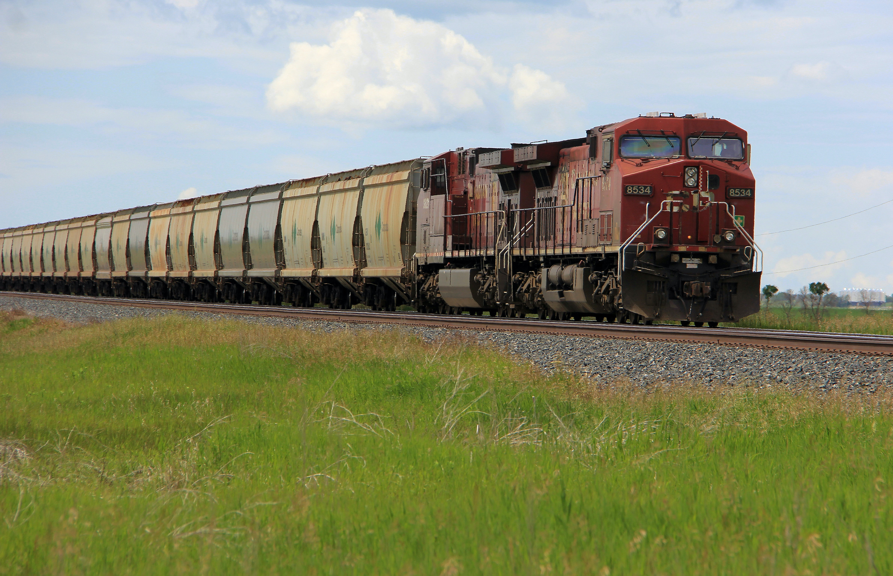

About Me
Indian Railways (IR) is a statutory body under the ownership of
Ministry of Railways, Government of India that operates India's
national railway system.[6] It manages the fourth largest national
railway system in the world by size, with a total route length of
67,956 km (42,226 mi) as of 31 March 2022. 52,247 km (32,465 mi) or
80% of all the broad-gauge routes are electrified with 25 kV 50 Hz
AC electric traction as of 1 April 2022.[4][5] In FY20, Indian
Railways carried 808.6 crore (8.086 billion) passengers and in FY
22, Railways transported 1418.1 Metric Tonnes of freight.[7][4] It
runs 13,169 passenger trains daily, on both long-distance and
suburban routes, covering 7,325 stations across India.[4] Mail or
Express trains, the most common types of trains, run at an average
speed of 50.6 km/h (31.4 mph). Suburban EMUs run at an average speed
of 37.5 km/h (23.3 mph). Ordinary passenger trains (incl. mixed) run
at an average speed of 33.5 km/h (20.8 mph).[4] The maximum speed of
passenger trains varies, with the Gatimaan Express running at a peak
speed of 160 km/h (99 mph).
In the freight segment, IR runs 8,479 trains daily.[4] The average
speed of freight trains is around 24 km/h (15 mph). The maximum
speed of freight trains varies from 60–75 km/h (37–47 mph) depending
on their axle load with 'container special' trains running at a peak
speed of 100 km/h (62 mph). As of March 2020, Indian Railways'
rolling stock consisted of 2,93,077 freight wagons, 76,608 passenger
coaches and 12,729 locomotives.[4] IR owns locomotive and
coach-production facilities at several locations in India. It had
1.254 million employees as of March 2020, making it the world's
eighth-largest employer.[4] The government has committed to
electrifying India's entire rail network by 2023–24, and become a
"net zero (carbon emissions) railway" by 2030.[8]. The first railway
proposals for India were made in Madras in 1832.[9] The country's
first transport train, Red Hill Railway (built by Arthur Cotton to
transport granite for road-building), ran from Red Hills to the
Chintadripet bridge in Madras in 1837.[9] In 1845, the Godavari Dam
Construction Railway was built by Cotton at Dowleswaram in
Rajahmundry, to supply stone for the construction of a dam over the
Godavari River. In 1851, the Solani Aqueduct Railway was built by
Proby Cautley in Roorkee to transport construction materials for
anaqueduct over the Solani River.[9] These railway tracks were
dismantled after these projects were completed and no longer exist.
India's first passenger train, operated by the Great Indian
Peninsula Railway and hauled by three steam locomotives (Sahib,
Sindh and Sultan), ran for 34 kilometres (21 mi) with 400 people in
14 carriages on 1,676 mm (5 ft 6 in) broad gauge track between Bori
Bunder (Mumbai) and Thane on 16 April 1853.[10][11] The Thane
viaducts, India's first railway bridges, were built over the Thane
creek when the Mumbai-Thane line was extended to Kalyan in May
1854.[12] Eastern India's first passenger train ran 39 km (24 mi)
from Howrah, near Kolkata, to Hoogly on 15 August 1854.[1] The first
passenger train in South India ran 97 km (60 mi) from
Royapuram-Veyasarapady (Madras) to Wallajaroad (Arcot) on 1 July
1856.[13]
On 24 February 1873, a horse-drawn 3.8 km (2.4 mi) tram opened in
Calcutta between Sealdah and Armenian Ghat Street.[14] On 9 May
1874, a horse-drawn tramway began operation in Bombay between Colaba
and Parel.[15] In 1879, the Nizam's Guaranteed State Railway was
established which built several railway lines across the then
Hyderabad State with Kachiguda Railway Station serving as its
headquarters.[16][17] In 1897, lighting in passenger coaches was
introduced by many railway companies. On 3 February 1925, the first
electric passenger train in India ran between Victoria Terminus and
Kurla.[18] The organization of Indian railways into regional zones
began in 1951,[19] when the Southern (14 April 1951), Central (5
November 1951), and Western (5 November 1951) zones were
created.[20] Fans and lights were mandated for all compartments in
all passenger classes in 1951, and sleeping accommodations were
introduced in coaches. In 1956, the first fully air-conditioned
train was introduced between Howrah
between New Delhi and Jhansi; it was later extended to Bhopal.[25] Two years later, the first self-printing ticket machine (SPTM) was introduced in New Delhi.[26] In 1993, air-conditioned three-tier coaches and a sleeper class (separate from second class) were introduced on IR. The CONCERT system of computerized reservations was deployed in New Delhi, Mumbai and Chennai in September 1996. In 1998, coupon validating machines (CVMs) were introduced at Mumbai Chhatrapati Shivaji Maharaj Terminus. The nationwide concierge system began operation on 18 April 1999. In February 2000, the Indian Railways website went online.[27] Individuals can book reserved tickets in online through Indian Railways Cattering and Tourism Corporation's(IRCTC) official website (www.irctc.co.in). On 3 August 2002.
